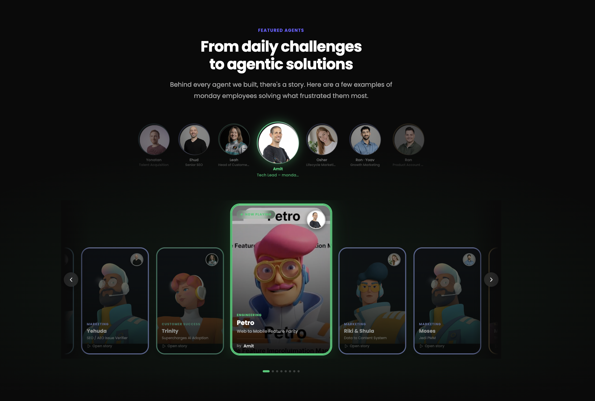
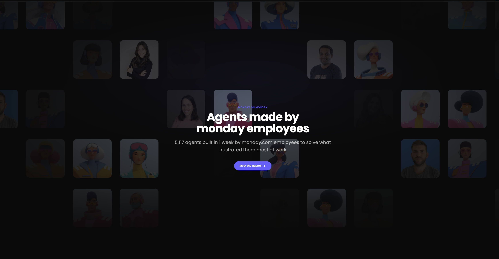

New · v2, visual


→ How this actually happens
From one capability to market, in one thread
Same four stages, now told through the real assets — one engineer, one agent, one number, then the pattern at scale and the page it became.
Running example: Agents — Petro, built by Amit (Engineering)
01 Product LaunchAmit builds "Petro"
→
60%
reduction in mobile parity backlog
02 Product valueThe result speaks for itself
→

03 Segment PackagingSame pattern, every team
→

04 Marketing launchShips as "monday on monday"
Assets are real — the agent card and Amit's photo are live product/team assets already used in the other decks in this repo; the carousel and hero screenshots are the actual "monday on monday" page. Swap in a different builder story (Ran/Moti, Osher/Riki Shula, Roni/Allison) if Petro isn't the right lead example.